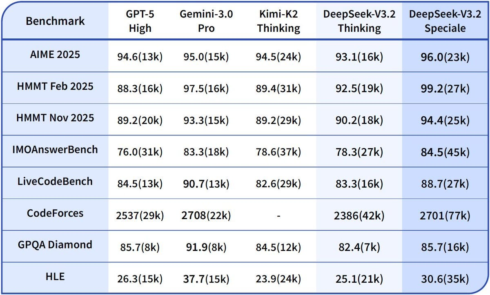
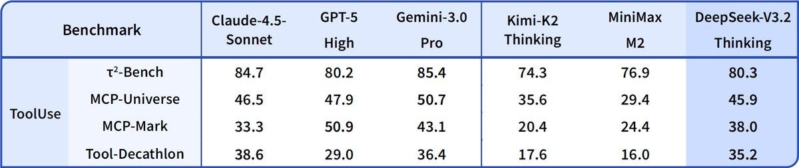
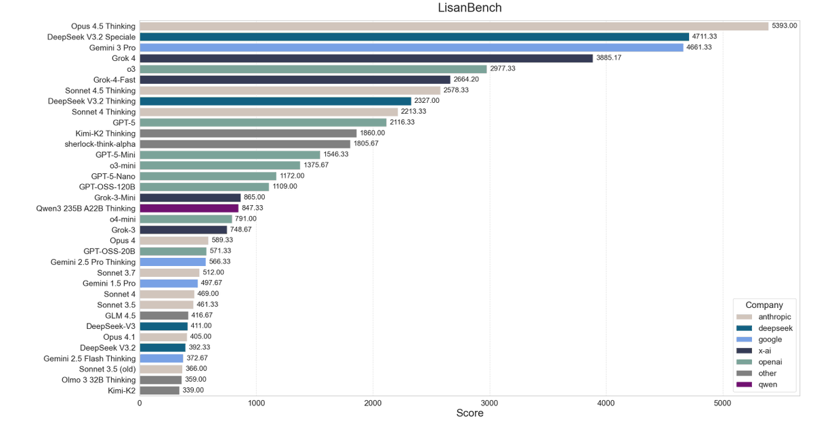
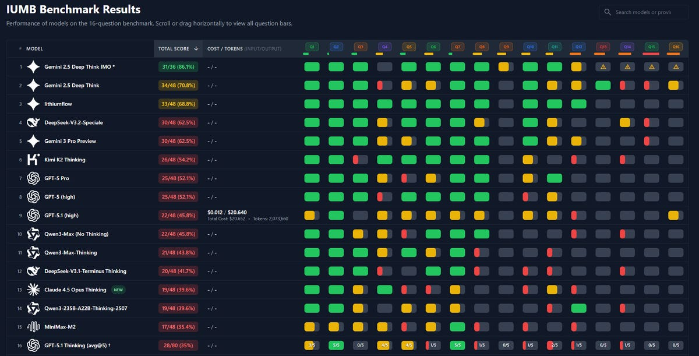

Zvi: DeepSeek V3.2 Is Okay And Cheap But
title: "Zvi: DeepSeek V3.2 Is Okay And Cheap But" source: https://thezvi.substack.com/p/deepseek-v32-is-okay-and-cheap-but author: unknown date: unknown models: [deepseek-v3-2] tags: [] mirrored: 2026-10-22 note: mirrored against link rot by the Pantheon; all rights with the original author
DeepSeek v3.2 Is Okay And Cheap But Slow
[
 ](https://substack.com/@thezvi)
](https://substack.com/@thezvi)
Dec 05, 2025
DeepSeek v3.2 is DeepSeek’s latest open model release with strong bencharks. Its paper contains some technical innovations that drive down cost.
It’s a good model by the standards of open models, and very good if you care a lot about price and openness, and if you care less about speed or whether the model is Chinese. It is strongest in mathematics.
What it does not appear to be is frontier. It is definitely not having a moment. In practice all signs are that it underperforms its benchmarks.
When I asked for practical experiences and reactions, I got almost no responses.
A Brief History of DeepSeek
DeepSeek is a cracked Chinese AI lab that has produced some very good open models, done some excellent research, and given us strong innovations in terms of training techniques and especially training efficiency.
They also, back at the start of the year, scared the hell out of pretty much everyone.
A few months after OpenAI released o1, and shortly after DeepSeek released the impressive v3 that was misleadingly known as the ‘six million dollar model,’ DeepSeek came out with a slick app and with r1, a strong open reasoning model based on v3 that showed its chain of thought. With reasoning models not yet scaled up, it was the perfect time for a fast follow, and DeepSeek executed that very well.
Due to a strong viral marketing campaign and confluence of events, including that DeepSeek’s app shot to #1 on the app store, and conflating the six million in cost to train v3 with OpenAI’s entire budget of billions, and contrasting r1’s strengths with o1’s weaknesses, events briefly (and wrongly) convinced a lot of people that China or DeepSeek had ‘caught up’ or was close behind American labs, as opposed to being many months behind.
There was even talk that American AI labs or all closed models were ‘doomed’ and so on. Tech stocks were down a lot and people attributed that to DeepSeek, in ways that reflected a stock market highly lacking in situational awareness and responding irrationally, even if other factors were also driving a lot of the move.
Politicians claimed this meant we had to ‘race’ or else we would ‘lose to China,’ thus all other considerations must be sacrificed, and to this day the idea of a phantom DeepSeek-Huawei ‘tech stack’ is used to scare us.
This is collectively known as The DeepSeek Moment.
Slowly, in hindsight, the confluence of factors that caused this moment became clear. DeepSeek had always been behind by many months, likely about eight. Which was a lot shorter than previous estimates, but a lot more than people were saying.
Later releases bore this out. DeepSeek’s r1-0528 and v3.1 did not ‘have a moment,’ ad neither did v3.2-exp or now v3.2. The releases disappointed.
DeepSeek remains a national champion and source of pride in China, and is a cracked research lab that innovates for real. Its models are indeed being pushed by the PRC, especially in the global south.
For my coverage of this, see: -
DeepSeek v3: The Six Million Dollar Model. -
DeepSeek: Panic at the App Store. -
DeepSeek: Lemon, It’s Wednesday. -
DeepSeek-r1-0528 Did Not Have a Moment. -
DeepSeek v3.1 Is Not Having a Moment.
Once More, With Feeling
I’d just been through a few weeks in which we got GPT-5.1, Grok 4.1, Gemini 3 Pro, GPT-5.1-Codex-Max and then finally Claude Opus 4.5. Mistral, listed above, doesn’t count. Which means we’re done and can have a nice holiday season, asks Padme?
No, Anakin said. There is another.
DeepSeek: 🚀 Launching DeepSeek-V3.2 & DeepSeek-V3.2-Speciale — Reasoning-first models built for agents!
🔹 DeepSeek-V3.2: Official successor to V3.2-Exp. Now live on App, Web & API.
🔹 DeepSeek-V3.2-Speciale: Pushing the boundaries of reasoning capabilities. API-only for now.
[Tech report [here]](https://t.co/7EyydyNuG0), v3.2 model, v3.2-speciale model.
🏆 World-Leading Reasoning
🔹 V3.2: Balanced inference vs. length. Your daily driver at GPT-5 level performance.
🔹 V3.2-Speciale: Maxed-out reasoning capabilities. Rivals Gemini-3.0-Pro.
🥇 Gold-Medal Performance: V3.2-Speciale attains gold-level results in IMO, CMO, ICPC World Finals & IOI 2025.
📝 Note: V3.2-Speciale dominates complex tasks but requires higher token usage. Currently API-only (no tool-use) to support community evaluation & research.
[

](https://substackcdn.com/image/fetch/$s_!yXRK!,f_auto,q_auto:good,fl_progressive:steep/https%3A%2F%2Fsubstack-post-media.s3.amazonaws.com%2Fpublic%2Fimages%2Fdaf1f98a-389c-4c18-b855-7a129b784b46_1200x723.jpeg)
🤖 Thinking in Tool-Use
🔹 Introduces a new massive agent training data synthesis method covering 1,800+ environments & 85k+ complex instructions.
🔹 DeepSeek-V3.2 is our first model to integrate thinking directly into tool-use, and also supports tool-use in both thinking and non-thinking modes.

Reading The Paper
Teortaxes threatened to bully me if I did not read the v3.2 paper. I did read it. The main innovation appears to be a new attention mechanism, which improves training efficiency and also greatly reduces compute cost to scaling the context window, resulting in v3.2 being relatively cheap without being relatively fast. Unfortunately I lack the expertise to appreciate the interesting technical aspects. Should I try and fix this in general? My gut says no.
What the paper did not include was any form of safety testing or information of any kind for this irreversible open release. There was not, that I could see, even a sentence that said ‘we did safety testing and are confident in this release’ or even one that said ‘we do not see any need to do any safety testing.’ It’s purely and silently ignored.
David Manheim: They announce the new DeepSeek.
“Did it get any safety testing, or is it recklessly advancing open-source misuse capability?”
They look confused.
“Did it get any safety testing?”
“It is good model, sir!”
I check the model card.
There’s absolutely no mention of misuse or safety.
Frankly, this is deeply irresponsible and completely unacceptable.
DeepSeek did by some accounts become somewhat censorious back in May, but that doesn’t seem to apply to, as George puts it, plans for <bad_device>.
DeepSeek claims to be ‘pushing the boundaries of reasoning capabilities’ and to be giving a GPT-5 level of performance. Their benchmarks match this story.
And they can’t even give us an explanation of why they don’t believe they owe us any sort of explanation? Not even a single sentence?
I knew DeepSeek was an irresponsible lab. I didn’t know they were this irresponsible.
Open Language Model Offers Mundane Utility
The short version of my overall take seems to be that DeepSeek v3.2 is excellent for its price point, and its best area is mathematics, but while it is cheap it is reported to be remarkably slow, and for most practical purposes it is not frontier.
Which means you only would use it either if you are doing relatively advanced math, or if all four of the following are true: -
You don’t need the frontier capabilities -
You don’t mind the lack of speed. -
You benefit a lot from decreased cost or it being an open model or both. -
You don’t mind the security concerns.
The only strong praise I found in practice was this exchange from perennial whale (DeepSeek) advocate Teortaxes, Vinicius and John Pressman:
Teortaxes: Strange feeling, talking to Opus 4.5 and V3.2 and objectively… Opus is not worth it. Not just for the price; its responses are often less sharp, less interesting. But I’m still burning tokens.
Anthropic can coast far on “personality”, enterprise coding aside.
John Pressman: Opus told me I was absolutely right when I wasn’t, V3.2 told me I was full of shit and my idea wouldn’t work when it sort of would, but it was right in spirit and I know which behavior I would rather have.
I’ve never understood this phenomenon because if I was tuning a model and it ever told me I was “absolutely right” about some schizo and I wasn’t I would throw the checkpoint out.
Vinicius: Have you been using Speciale?
Teortaxes: yes but it’s not really as good as 3.2
it’s sometimes great (when it doesn’t doomloop) for zero-shotting a giant context
Vinicius: I’ve been using 3.2-thinking to handle input from social media/web; it’s insanely good for research, but I haven’t found a real use case for Speciale in my workflows.
Notice the background agreement that the ‘model to beat’ for most purposes is Opus 4.5, not Gemini 3 or GPT-5.1. I strongly agree with this, although Gemini 3 still impresses on ‘just the facts’ or ‘raw G’ tasks.
Some people really want a combative, abrasive sparring partner that will err on the side of skepticism and minimize false positives. Teortaxes and Pressman definitely fit that bill. That’s not what most people want. You can get Opus to behave a lot more in that direction if you really want that, but not easily get it to go all the way.
Is v3.2 a good model that has its uses? My guess is that it is. But if it was an exciting model in general, we would have heard a lot more.
Those Benchmarks
They are very good benchmarks, and a few independent benchmarks also gave v3.2 high scores, but what’s the right bench to be maxing?
Teortaxes: V3.2 is here, it’s no longer “exp”. It’s frontier. Except coding/agentic things that are being neurotically benchmaxxed by the big 3. That’ll take one more update.
“Speciale” is a high compute variant that’s between Gemini and GPT-5 and can score gold on IMO-2025.
Thank you guys.
hallerite: hmm, I wonder if the proprietary models are indeed being benchmaxxed. DeepSeek was always a bit worse at the agentic stuff, but I guess we could find out as soon as another big agentic eval drops
Teortaxes: I’m using the term loosely. They’re “benchmaxxed” for use cases, not for benchmarks. Usemaxxed. But it’s a somewhat trivial issue of compute and maybe environment curation (also overwhelmingly a function of compute).
This confuses different maxings of things but I love the idea of ‘usemaxxed.’
Teortaxes (responding to my asking): Nah. Nothing happened. Sleep well, Zvi…
(nothing new happened. «A factor of two» price reduction… some more post-training… this was, of course, all baked in. If V3.2-exp didn’t pass the triage, why would 3.2?)
That’s a highly fair thing to say about the big three, that they’ve given a lot of focus to making them actually useful in practice for common use cases. So one could argue that by skipping all that you could get a model that was fundamentally as smart or frontier as the big three, it just would take more work to get it to do the most common use cases. It’s plausible.
Teortaxes: I think Speciale’s peak performance suggests a big qualitative shift. Their details on post-training methodology align with how I thought the frontier works now. This is the realm you can’t touch with distillation.
Lisan al Gaib: LisanBench results for DeepSeek-V3.2
DeepSeek-V3.2 and V3.2 Speciale are affordable frontier models*
*the caveat is that they are pretty slow at ~30-40tks/s and produce by far the longest reasoning chains at 20k and 47k average output tokens (incl. reasoning) - which results in extremely long waiting times per request.
but pricing is incredible
for example, Sonnet 4.5 Thinking costs 10x ($35) as much and scores much lower than DeepSeek-V3.2 Speciale ($3)
DeepSeek V3.2 Speciale also scored 13 new high scores
[

](https://substackcdn.com/image/fetch/$s_!qyAj!,f_auto,q_auto:good,fl_progressive:steep/https%3A%2F%2Fsubstack-post-media.s3.amazonaws.com%2Fpublic%2Fimages%2F71643d3a-b1bb-4e1f-8fee-18b2c7cd0daa_1200x622.png)
Chase Brower: DSV3.2-Speciale scores 30 on @AcerFur ‘s IUMB math benchmark, tying with the existing top performer Gemini 3 Pro Preview.
Token usage/cost isn’t up yet, but it cost $1.07 to run Speciale with 2546096 total tokens, vs $20.64 for gpt-5 👀👀
[

](https://substackcdn.com/image/fetch/$s_!yQaW!,f_auto,q_auto:good,fl_progressive:steep/https%3A%2F%2Fsubstack-post-media.s3.amazonaws.com%2Fpublic%2Fimages%2F9f9a98c0-6251-466e-8deb-27b07aa959f9_1200x611.png)
Those are presumably non-targeted benchmark that give sensible ratings elsewhere, as is this one from NomoreID on a Korean test, so it confirms that the ‘good on benchmarks’ thing is probably generally real especially on math.
Open Language Model Doesn’t Offer Mundane Utility
In practice, it seems less useful, whether or not that is because less usemaxxed.
I want my models to be usemaxxed, because the whole point is to use them.
Also our standards are very high.
Chase Brower: The big things you’ll see on tpot are:
- vibecoding (V3.2 is still a bit behind in performance + really slow inference)
- conversation (again, slow)
Since it’s not very good for these, you won’t hear much from tpot
I feel like it’ll be a go-to for math/proving assistance, tho
Clay Schubiner: It’s weak but is technically on the Pareto frontier by being cheap - at least on my benchmark
Jake Halloran: spent like 10 minutes testing it and its cheap and ~fine~
its not frontier but not bad either (gpt 5ish)
The counterargument is that if you are ‘gpt 5ish’ then the core capabilities pre-usemaxxing are perhaps only a few months behind now? Which is very different from being overall only a few months behind in a practical way, or in a way that would let one lead.
The Pliny jailbreak is here, if you’re curious.
Gallabytes was unimpressed, as were those responding if your standard is the frontier. There were reports of it failing various gotcha questions and no reports of it passing.
Open Language Model Does Do The Math
In other DeepSeek news, DeepSeekMath-v2 used a prover-verifier loop that calls out the model’s own mistakes for training purposes, the same way you’d do it if you were learning real math.
Teortaxes: There is a uniquely Promethean vibe in Wenfeng’s project.
Before DS-MoE, only frontier could do efficiency.
Before DS-Math/Prover, only frontier could do Real math.
Before DS-Prover V2, only frontier could do Putnam level.
Before DS-Math V2, only frontier could do IMO Gold…
This is why I don’t think they’ll be the first to “AGI”, but they will likely be the first to make it open source. They can replicate anything on a shoestring budget, given some time. Stealing fire from definitely-not-gods will continue until human autonomy improves.
So far, the reported actual breakthroughs have all been from American closed source frontier models. Let’s see if that changes.
I am down with the recent direction of DeepSeek releases towards specialized worthwhile math topics. That seems great. I do not want them trying to cook an overall frontier model, especially given their deep level of irresponsibility.
I’ll Get You Next Time, Gadget
Making things cheaper can still be highly valuable, even with other issues. By all accounts this model has real things to offer, the first noteworthy DeepSeek offering since r1. What it is not, regardless of their claims, is a frontier model.
This is unsurprising. You don’t go from v3.2-exp to v3.2 in your naming schema while suddenly jumping to the frontier. You don’t actually go on the frontier, I would hope, with a fully open release, while saying actual zero words about safety concerns.
DeepSeek are still doing interesting and innovative things, and this buys some amount of clock in terms of keeping them on the map.
As DeepSeek says in their v3.2 paper, open models have since r1 been steadily falling further behind closed models rather than catching up. v3.2 appears to close some of that additional gap.
The question is, will they be cooking a worthy v4 any time soon?
The clock is ticking.